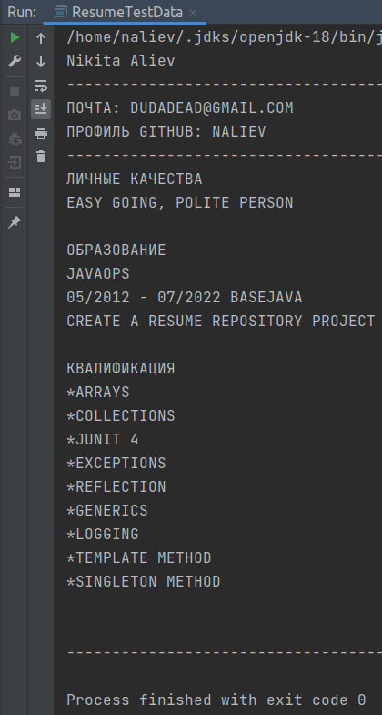
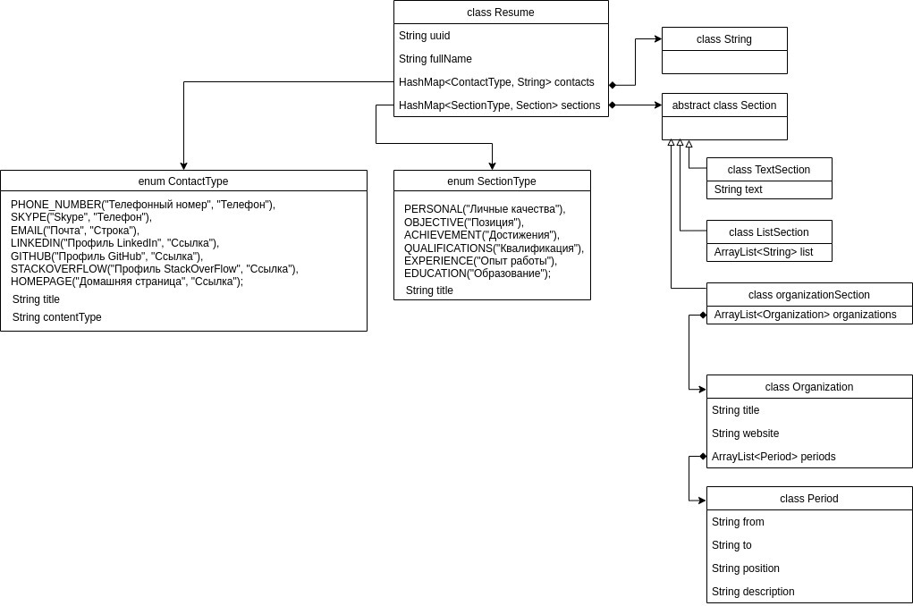
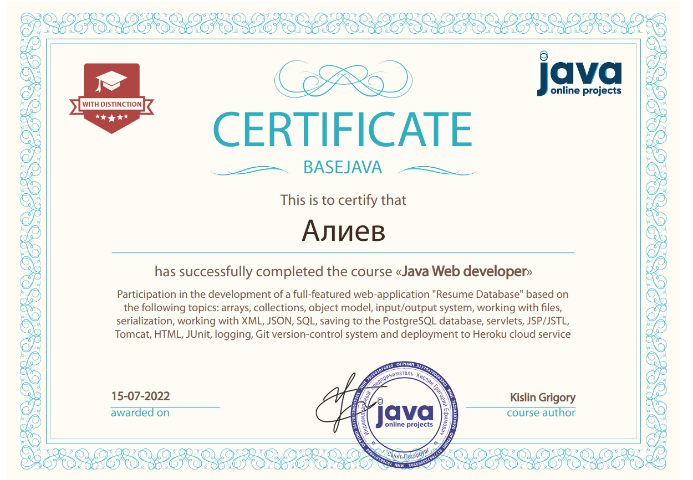

This application was created during the development course from Java Online Projects. I really enjoyed going all the way from zero to a fully functional application. Not too much theory and a lot of practice fit perfectly into my learning process, it was impossible to relax, because all my code was checked by the mentor Evgeny.
I already had basic knowledge of Java Core. And on the course, I continued to improve them, studying the principles of OOP, memory structure, object model, patterns of projecting, exceptions, reflection, generics and lambda functions.
Collections were the first serious test. Understanding the hierarchy of collections, the basic principles of how each type works, finding key differences and the best option for specific cases (cases of storing and using a dataset in my resume set cases).
 After working through the skeleton of my application, determining the right level of abstraction, and getting the first console working version, I needed to gain a foothold and not let new improvements break the already working code. So, I learned what unit testing is, in the project I used version 4 of the JUnit framework. 
There comes a point where I realize that I can't initialize my list of resumes from scratch every time I need to do something with it, so I started working with the filesystem through the File and Path API and then with (G)JSON and xml serialization.
I really enjoyed working with my data structure in a functional style with the Stream API. But it didn’t work out to the end to understand multithreading, in the project I didn’t use the methods of the concurrent class that I studied, apparently I will have to return to this topic later.
Then I started working with PostgresSQL, it was very efficient, the JDBC architecture allows you to create really cool systems for handling data. But someone needs to see this data in order to work with it. And here I learned about the basics of the HTTP protocol and data transmission over the Internet. And at the head of it all was the TomCat servlet container.
Writing a fully working servlet to view, modify, delete and add resumes was an interesting task, at the end of the journey I was delighted with my work. Using JSP and JSTL to create dynamic pages is not the most convenient, but effective tool.
Actually, the project was almost over at this point, adding css for a beautiful output and uploading the application to the Heroku cloud service was a cakewalk.
 As a bonus, I received a certificate of completion of the course, it says "with distinction", but to tell the truth, sometimes I had to submit the solution to my homework two or three times, what then can be "distinction" after that?